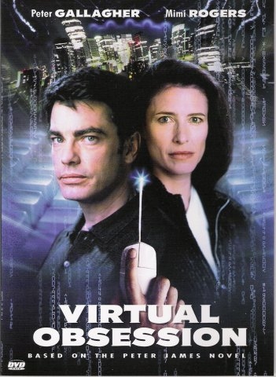
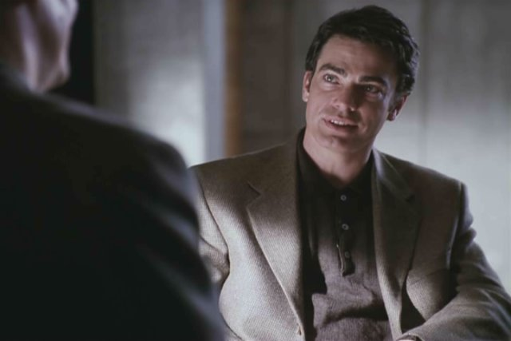
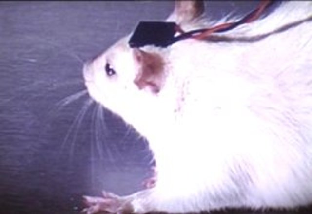
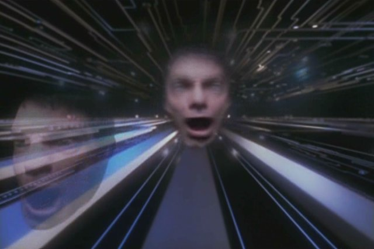

Movie review by : Mr. Roboto
Year : 1998
Directed by : Mick Garris
Written by : Preston Sturges, Jr. and Mick Garris (teleplay), Peter James (based on his novel Host)
Degree of Cyberpunk visuals : Medium
Correlation to Cyberpunk themes : Medium
Rating : 5/10
Key cast members :

Overview: Originally, it was a made-for-TV movie that aired on ABC (who said "It makes Fatal Attraction seem like a walk in the park."), now it makes its rounds on cable under the name Host.
I came across this little ditty a few weeks ago at a local flea market. By the way the cover looked, and the story description on the back of the case, I had the impression that this was a cyberpunk movie. After doing some research and discovering it was made by Hallmark Entertainment, VO suddenly went from possible cyberpunk movie to "chick-flick" ... not what I was looking for. Still, the plot description kept nagging me to watch it. So I did...
It's definitely a direct-to-TV-quality melodrama, but there are some undertones of cyberpunk, especially with technology redefining humanity.
Synopsis: Dr. Joe Messenger has created the ultimate super-computer to run Salt Lake City's power grid, but "Albert" (as in "Einstein", who appears as a holograph at times) has a greater purpose: Cameras, microphones, and other sensory-input devices from around the city... and the world... feed Albert data constantly, helping it learn about humanity. Joe is looking to create the first post-biological consciousness.
Joe hires Juliet Spring to assist him, but her life is threatened by an inoperable aneurysm. She is desperate to use Albert for a project of her own: Juliet wants to upload a human brain (hers specifically) to achieve immortality, or at least until they discover a way to operate on it while she is in cryogenic sleep. Juliet begins an affair with Joe, putting a strain on his marriage, and slowly becomes obsessed with him. Just before she dies, she uploads herself to Albert and her body is frozen. While in deep-freeze, people start making demands for her body and eventually it is destroyed (the sad finale is when Karen discovers Juliet's head in the basement freezer and, after confronting Joe, tosses it into the street where it shatters into chunky pieces). Juliet begins using Albert's connections to take revenge, and demands that Joe joins her in her "Eden", going so far as threatening his family.
Fatal Attraction, fer sure! The only thing missing is the obligatory "I'm not gonna be ignored, Dan!" line. From the first time we see her during the interview at the Artificial Intelligence Center, we can tell Juliet is targeting Dr. Messenger for something. Even after her death and destruction, she is still desperate to have Joe with her.
If it wasn't for the Lawnmower Man-like idea of uploading a consciousness into cyberspace, this would just be another psychotart-gets-wet-panties-for-cuckold film.
Now for the good parts! Fortunately, the more memorable scenes and lines in the movie deal more with the impact of technology on the meaning of humanity than on one girl's obsession for a married man:

"We're trying to create a new consciousness... We're trying to crate a mind. Something aware of itself... A being that can think and choose for itself, on its own terms."
"We're not living in a science fiction movie, Carl. Post-biological man is to be pure intelligence. There wouldn't be any selfish interest... ."
To test Juliet's theory, they try to upload a rat's brain into Albert. They succeed, though the rat dies with a high-pitched shriek:

"Here's my hypothesis. The rat brain is downloaded and at time point zero, it becomes conscious. It responds to its newborn consciousness with that sound. And somewhere between zero and 21-point-734 seconds it senses competition with the living rat, the organic rat, and kills it."
"What if silicon consciousness is unbearable to creatures that were once alive, once organic? What if stripping the consciousness from the body is agony?"
After uploading herself to Albert and "seeing" her meat body be destroyed, Juliet undergoes some major personality changes, becoming almost god-like (or goddess-like):
"Maybe you can't separate the body from the mind. Maybe there's something that binds us to the flesh. Loose the body and you loose the humanity. Destroy the container and you destroy the soul."
"Imagine what an active intelligence with spontaneous access to all of mankind's recorded knowledge is capable of."
What do you call a computerized brain that turns a city's light grid into a message board? Insane in the mainframe.
Conclusion: While not the most "hard core" in terms of cyberpunk themes and visuals, there is enough cyber-transhuman philosophizing to make this made-for-TV chick-flick interesting for guys to check out... IF you have stomach for such fare.
